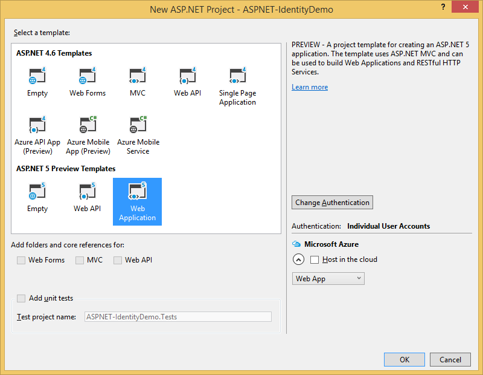

Introduction to Identity¶
By Pranav Rastogi, Rick Anderson, Tom Dykstra, Jon Galloway and Erik Reitan
ASP.NET Core Identity is a membership system which allows you to add login functionality to your application. Users can create an account and login with a user name and password or they can use an external login providers such as Facebook, Google, Microsoft Account, Twitter and more.
You can configure ASP.NET Core Identity to use a SQL Server database to store user names, passwords, and profile data. Alternatively, you can use your own persistent store to store data in another other persistent storage, such as Azure Table Storage.
Overview of Identity¶
In this topic, you’ll learn how to use ASP.NET Core Identity to add functionality to register, log in, and log out a user. You can follow along step by step or just read the details. For more detailed instructions about creating apps using ASP.NET Core Identity, see the Next Steps section at the end of this article.
- Create an ASP.NET Core Web Application project in Visual Studio with Individual User Accounts.
In Visual Studio, select File -> New -> Project. Then, select the ASP.NET Web Application from the New Project dialog box. Continue by selecting an ASP.NET Core Web Application with Individual User Accounts as the authentication method.
The created project contains the
Microsoft.AspNetCore.Identity.EntityFrameworkCorepackage, which will persist the identity data and schema to SQL Server using Entity Framework Core.Note
In Visual Studio, you can view NuGet packages details by selecting Tools -> NuGet Package Manager -> Manage NuGet Packages for Solution. You also see a list of packages in the dependencies section of the project.json file within your project.
The identity services are added to the application in the
ConfigureServicesmethod in theStartupclass:// This method gets called by the runtime. Use this method to add services to the container. public void ConfigureServices(IServiceCollection services) { // Add framework services. services.AddEntityFramework() .AddSqlServer() .AddDbContext<ApplicationDbContext>(options => options.UseSqlServer(Configuration["Data:DefaultConnection:ConnectionString"])); services.AddIdentity<ApplicationUser, IdentityRole>() .AddEntityFrameworkStores<ApplicationDbContext>() .AddDefaultTokenProviders(); services.AddMvc(); // Add application services. services.AddTransient<IEmailSender, AuthMessageSender>(); services.AddTransient<ISmsSender, AuthMessageSender>(); }These services are then made available to the application through dependency injection.
Identity is enabled for the application by calling
UseIdentityin theConfiguremethod of theStartupclass. This adds cookie-based authentication to the request pipeline.// This method gets called by the runtime. Use this method to configure the HTTP request pipeline. public void Configure(IApplicationBuilder app, IHostingEnvironment env, ILoggerFactory loggerFactory) { loggerFactory.AddConsole(Configuration.GetSection("Logging")); loggerFactory.AddDebug(); if (env.IsDevelopment()) { app.UseBrowserLink(); app.UseDeveloperExceptionPage(); app.UseDatabaseErrorPage(); } else { app.UseExceptionHandler("/Home/Error"); } app.UseIISPlatformHandler(options => options.AuthenticationDescriptions.Clear()); app.UseStaticFiles(); app.UseIdentity(); // To configure external authentication please see http://go.microsoft.com/fwlink/?LinkID=532715 app.UseMvc(routes => { routes.MapRoute( name: "default", template: "{controller=Home}/{action=Index}/{id?}"); }); }For more information about the application start up process, see Application Startup.
- Creating a user.
Launch the application from Visual Studio (Debug -> Start Debugging) and then click on the Register link in the browser to create a user. The following image shows the Register page which collects the user name and password.

When the user clicks the Register link, the
UserManagerandSignInManagerservices are injected into the Controller:public class AccountController : Controller { private readonly UserManager<ApplicationUser> _userManager; private readonly SignInManager<ApplicationUser> _signInManager; private readonly IEmailSender _emailSender; private readonly ISmsSender _smsSender; private readonly ApplicationDbContext _applicationDbContext; private static bool _databaseChecked; private readonly ILogger _logger; public AccountController( UserManager<ApplicationUser> userManager, SignInManager<ApplicationUser> signInManager, IEmailSender emailSender, ISmsSender smsSender, ILoggerFactory loggerFactory, ApplicationDbContext applicationDbContext) { _userManager = userManager; _signInManager = signInManager; _emailSender = emailSender; _smsSender = smsSender; _applicationDbContext = applicationDbContext; _logger = loggerFactory.CreateLogger<AccountController>(); }Then, the Register action creates the user by calling
CreateAsyncfunction of theUserManagerobject, as shown below:[HttpPost] [AllowAnonymous] [ValidateAntiForgeryToken] public async Task<IActionResult> Register(RegisterViewModel model) { EnsureDatabaseCreated(_applicationDbContext); if (ModelState.IsValid) { var user = new ApplicationUser { UserName = model.Email, Email = model.Email }; var result = await _userManager.CreateAsync(user, model.Password); if (result.Succeeded) { // For more information on how to enable account confirmation and password reset please visit http://go.microsoft.com/fwlink/?LinkID=532713 // Send an email with this link //var code = await _userManager.GenerateEmailConfirmationTokenAsync(user); //var callbackUrl = Url.Action("ConfirmEmail", "Account", new { userId = user.Id, code = code }, protocol: HttpContext.Request.Scheme); //await _emailSender.SendEmailAsync(model.Email, "Confirm your account", // "Please confirm your account by clicking this link: <a href=\"" + callbackUrl + "\">link</a>"); await _signInManager.SignInAsync(user, isPersistent: false); _logger.LogInformation(3, "User created a new account with password."); return RedirectToAction(nameof(HomeController.Index), "Home"); } AddErrors(result); } // If we got this far, something failed, redisplay form return View(model); }
- Log in.
If the user was successfully created, the user is logged in by the
SignInAsyncmethod, also contained in theRegisteraction. By signing in, theSignInAsyncmethod stores a cookie with the user’s claims.[HttpPost] [AllowAnonymous] [ValidateAntiForgeryToken] public async Task<IActionResult> Register(RegisterViewModel model) { EnsureDatabaseCreated(_applicationDbContext); if (ModelState.IsValid) { var user = new ApplicationUser { UserName = model.Email, Email = model.Email }; var result = await _userManager.CreateAsync(user, model.Password); if (result.Succeeded) { // For more information on how to enable account confirmation and password reset please visit http://go.microsoft.com/fwlink/?LinkID=532713 // Send an email with this link //var code = await _userManager.GenerateEmailConfirmationTokenAsync(user); //var callbackUrl = Url.Action("ConfirmEmail", "Account", new { userId = user.Id, code = code }, protocol: HttpContext.Request.Scheme); //await _emailSender.SendEmailAsync(model.Email, "Confirm your account", // "Please confirm your account by clicking this link: <a href=\"" + callbackUrl + "\">link</a>"); await _signInManager.SignInAsync(user, isPersistent: false); _logger.LogInformation(3, "User created a new account with password."); return RedirectToAction(nameof(HomeController.Index), "Home"); } AddErrors(result); } // If we got this far, something failed, redisplay form return View(model); }The above
SignInAsyncmethod calls the belowSignInAsynctask, which is contained in theSignInManagerclass.If needed, you can access the user’s identity details inside a controller action. For instance, by setting a breakpoint inside the
HomeController.Indexaction method, you can view theUser.claimsdetails. By having the user signed-in, you can make authorization decisions. For more information, see Authorization.As a registered user, you can log in to the web app by clicking the Log in link. When a registered user logs in, the
Loginaction of theAccountControlleris called. Then, the Login action signs in the user using thePasswordSignInAsyncmethod contained in theLoginaction.[HttpPost] [AllowAnonymous] [ValidateAntiForgeryToken] public async Task<IActionResult> Login(LoginViewModel model, string returnUrl = null) { EnsureDatabaseCreated(_applicationDbContext); ViewData["ReturnUrl"] = returnUrl; if (ModelState.IsValid) { // This doesn't count login failures towards account lockout // To enable password failures to trigger account lockout, set lockoutOnFailure: true var result = await _signInManager.PasswordSignInAsync(model.Email, model.Password, model.RememberMe, lockoutOnFailure: false); if (result.Succeeded) { _logger.LogInformation(1, "User logged in."); return RedirectToLocal(returnUrl); } if (result.RequiresTwoFactor) { return RedirectToAction(nameof(SendCode), new { ReturnUrl = returnUrl, RememberMe = model.RememberMe }); } if (result.IsLockedOut) { _logger.LogWarning(2, "User account locked out."); return View("Lockout"); } else { ModelState.AddModelError(string.Empty, "Invalid login attempt."); return View(model); } } // If we got this far, something failed, redisplay form return View(model); }
- Log off.
Clicking the Log off link calls the
LogOffaction in the account controller.public async Task<IActionResult> LogOff() { await _signInManager.SignOutAsync(); _logger.LogInformation(4, "User logged out."); return RedirectToAction(nameof(HomeController.Index), "Home"); }The code above shows the
SignInManager.SignOutAsyncmethod. TheSignOutAsyncmethod clears the users claims stored in a cookie.
- View the database.
After stopping the application, view the user database from Visual Studio by selecting View -> SQL Server Object Explorer. Then, expand the following within the SQL Server Object Explorer:
- (localdb)MSSQLLocalDB
- Databases
- aspnet5-<the name of your application>
- Tables
Next, right-click the dbo.AspNetUsers table and select View Data to see the properties of the user you created.

Identity Components¶
The primary reference assembly for the identity system is Microsoft.AspNetCore.Identity. This package contains the core set of interfaces for ASP.NET Core Identity.

These dependencies are needed to use the identity system in ASP.NET Core applications:
EntityFramework.SqlServer- Entity Framework is Microsoft’s recommended data access technology for relational databases.Microsoft.AspNetCore.Authentication.Cookies- Middleware that enables an application to use cookie based authentication, similar to ASP.NET’s Forms Authentication.Microsoft.AspNetCore.Cryptography.KeyDerivation- Utilities for key derivation.Microsoft.AspNetCore.Hosting.Abstractions- Hosting abstractions.
Migrating to ASP.NET Core Identity¶
For additional information and guidance on migrating your existing identity store see Migrating Authentication and Identity